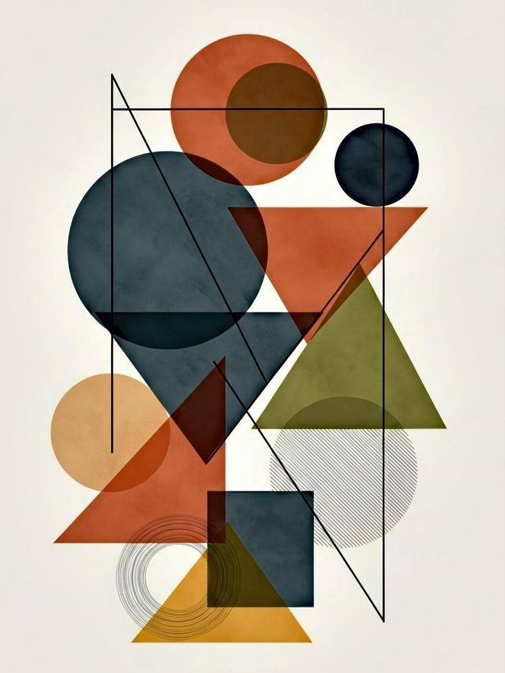

Praktike
Arkitektet dhe inxhinieret perdorin siperfaqe, vellime, pjerresi, diagonale dhe kende cdo dite.
Matje dhe llogaritje
Gjeometria në arkitekturë është një element thelbësor që ndikon në mënyrën se si projektohen dhe ndërtohen hapësirat. Ajo nuk shërben vetëm për llogaritje, por edhe për të krijuar harmoni, bukuri dhe qëndrueshmëri në ndërtesa. Për ta kuptuar më mirë këtë temë, mund ta ndajmë në disa nëntema kryesore: Gjeometria si bazë e projektimit arkitektonik Në arkitekturë, çdo projekt fillon me forma dhe struktura gjeometrike. Arkitektët përdorin parime matematikore për të organizuar hapësirat dhe për të siguruar që ndërtesa të jetë funksionale dhe e qëndrueshme. Gjeometria ndihmon në planifikimin e çdo detaji, nga baza e ndërtesës deri te pjesët më të vogla të saj. Format gjeometrike në ndërtesa Shumica e ndërtesave bazohen në forma të thjeshta si katrori, drejtkëndëshi, rrethi dhe trekëndëshi. Këto forma kombinohen për të krijuar struktura më komplekse. Për shembull, trekëndëshi përdoret shpesh në struktura mbajtëse për shkak të forcës së tij, ndërsa rrethi përdoret për kupola dhe hapësira të mëdha. Simetria dhe balanca Simetria është një nga parimet më të rëndësishme në arkitekturë. Ajo krijon ndjenjë rregulli dhe harmonie. Kur një ndërtesë është simetrike, ajo duket më e qëndrueshme dhe më e bukur për syrin. Balanca arrihet duke shpërndarë në mënyrë të barabartë elementet në të gjithë strukturën. Proporcionet dhe harmonia Proporcionet lidhen me marrëdhënien midis pjesëve të ndryshme të një ndërtese. Një ndërtesë me proporcione të mira duket më estetike dhe më natyrale. Raporti i artë është një nga shembujt më të njohur që përdoret për të arritur këtë harmoni. Roli i vijave dhe këndeve Vijat dhe këndet ndikojnë drejtpërdrejt në pamjen dhe ndjesinë që jep një ndërtesë. Vijat vertikale japin ndjesinë e lartësisë dhe fuqisë, ndërsa vijat horizontale krijojnë stabilitet dhe qetësi. Këndet përdoren për të krijuar forma të ndryshme dhe për të ndikuar në funksionin e hapësirës. Përdorimi i gjeometrisë në struktura Gjeometria është shumë e rëndësishme për qëndrueshmërinë e ndërtesave. Forma si trekëndëshi ndihmojnë në shpërndarjen e forcave dhe parandalojnë shembjen. Kjo është arsyeja pse shumë ura dhe kulla përdorin struktura trekëndore. Gjeometria në arkitekturën moderne Në kohët moderne, arkitektët përdorin forma më të avancuara dhe më kreative. Falë teknologjisë, ata mund të krijojnë ndërtesa me forma të lakuara, asimetrike dhe futuriste. Kjo e ka bërë arkitekturën më të larmishme dhe inovative. Rëndësia e gjeometrisë në arkitekturë Në fund, gjeometria është ajo që lidh funksionalitetin me estetikën. Ajo ndihmon në krijimin e ndërtesave të sigurta, ekonomike dhe të bukura, duke e bërë një element të domosdoshëm në çdo projekt arkitektonik.

Gjeometria nuk eshte vetem teori. Ajo ndihmon ne vizatim teknik, projektim, matje, ndarje hapesire, llogaritje materialesh, qendrueshmeri strukturore dhe harmoni estetike. Nje ndertese e mire kerkon saktesi matematikore po aq sa edhe ide krijuese.
Arkitektet dhe inxhinieret perdorin siperfaqe, vellime, pjerresi, diagonale dhe kende cdo dite.
Trekendeshi, harku dhe kupola perdoren per te shperndare forcat dhe per te rritur stabilitetin.
Simetria, ritmi, moduli dhe proporcioni e bejne nje objekt me te bukur dhe me te rregullt.
Ky projekt lidh matematiken e shkolles me boten reale dhe e ben prezantimin me bindes.
Para se te flasim per figurat dhe trupat, duhet te kuptojme elementet themelore qe ndertojne gjithe boten gjeometrike: pika, vijat, segmentet, rrezet, kendet, planin dhe hapesiren.
Pika tregon vetem pozicion dhe nuk ka gjatesi, gjeresi apo trashesi. Ajo shenohet shpesh me A, B, C.
Vija shtrihet pafund ne te dy drejtimet, ndersa segmenti ka dy skaje dhe gjatesi te caktuar.
Rrezja ka nje pike fillimi dhe zgjatet pafund vetem ne nje drejtim.
Kend i mprehte, kend i drejte, kend i gjere, kend i shtrire dhe kend i plote jane bazike ne projektim.
Plani eshte siperfaqe e sheshte dy-dimensionale ku paraqiten figurat 2D dhe planimetrite.
Hapesira tre-dimensionale eshte ambienti ku shfaqen trupat gjeometrike dhe objektet reale.
Kendet jane shume te rendesishme ne arkitekture sepse percaktojne pjerresine e catise, hapjen e nje strukture, pozicionin e shkalleve dhe kompozimin e fasades.
| Lloji i kendit | Masa | Perdorimi ne praktike |
|---|---|---|
| Kend i mprehte | Me i vogel se 90 grade | Shfaqet ne trekendesha, catite e pjerrta dhe forma dinamike. |
| Kend i drejte | Fiks 90 grade | Perdoret ne mure, dysheme, dritare, dyer dhe planimetri drejtkendore. |
| Kend i gjere | Me i madh se 90 grade dhe me i vogel se 180 grade | Shfaqet ne dizajn modern, kthesa dhe struktura jo standarde. |
| Kend i shtrire | 180 grade | Lidhet me vijat e drejta dhe me vazhdimesine lineare. |
| Kend i plote | 360 grade | Perdoret ne rrotullime, kupola rrethore dhe kompozime qendrore. |
Figurat 2D kane gjatesi dhe gjeresi, por jo trashesi. Ato perdoren ne planimetri, fasada, dekorime, vizatime teknike dhe ndarje funksionale te hapesires. Me poshte jane llojet kryesore dhe me te njohura.
Trekendeshi eshte nje nga format me te rendesishme ne gjeometri dhe ne ndertim, sepse eshte shume i qendrueshem. Ai klasifikohet sipas brinjeve dhe sipas kendeve.
Ka 3 brinje te barabarta dhe 3 kende prej 60 grade. Simetri e larte dhe pamje shume e rregullt.
Ka 2 brinje te barabarta. Perdoret shpesh ne forma dekorative dhe elemente fasade.
Ka 3 brinje te ndryshme. Ofron larmi ne dizajn dhe ne ndarje jo standarde te hapesires.
Ka nje kend prej 90 grade. Eshte shume i rendesishem per Pitagoren, catite dhe matjet diagonale.
Te tre kendet jane me te vegjel se 90 grade. Jep pamje te mprehte dhe te ngritur.
Ka nje kend me te madh se 90 grade. Perdoret ne disa kompozime moderne.
Katerkendeshat jane shume te perdorura ne arkitekture, sidomos ne mure, dritare, dysheme, pllaka, mobilim, fasada dhe plane ndertimi.
Ka 4 brinje te barabarta dhe 4 kende te drejta. Perdoret ne module, pllaka dhe kompozime simetrike.
Ka 4 kende te drejta dhe brinje perballe te barabarta. Eshte forma me e zakonshme ne ndertesa.
Ka dy pale brinjesh paralele. Jep levizje vizuale dhe perdoret ne fasada me ritem diagonal.
Ka 4 brinje te barabarta, por jo domosdoshmerisht kende te drejta. Shpesh perdoret ne motive dekorative.
Ka nje pale brinjesh paralele. Eshte i dobishem ne prerje teknike dhe ne kompozime me pjerresi.
Ka dy pale brinjesh fqinje te barabarta. Perdoret ne ornamente dhe kompozime simetrike.
Shumekendeshi eshte figure me shume se 4 brinje. Ai mund te jete i rregullt, kur te gjitha brinjet dhe kendet jane te barabarta, ose i parregullt, kur ato ndryshojne.
Ka 5 brinje. Versioni i rregullt ka simetri te bukur dhe lidhet shpesh me raportin e arte.
Ka 6 brinje. Shume i rendesishem ne modele natyrore dhe ne rrjete modulare.
Ka 7 brinje. Me i rralle ne ndertim, por i dobishem per ilustruar shumekendeshat.
Ka 8 brinje. Perdoret ne planimetri qendrore, kulla dhe dhoma me organizim ceremonial.
Ka 9 brinje. Shfaqet me pak, por sherben per te treguar zgjerimin e familjes se shumekendesheve.
Ka 10 brinje. Jep ritem elegant dhe mund te perdoret ne dizajn ornamental.
Keto forma japin butesi, rrjedhshmeri dhe ndjesi qendrore. Ne arkitekture perdoren ne kupola, atriume, dritare, sheshe rrethore dhe elemente dekorative.
Te gjitha pikat kane te njejten largesi nga qendra. Jep simetri perfekte rrotulluese.
Gjysma e nje rrethi. Perdoret ne harqe, nishe dhe hapje klasike.
Ngjan me rrethin, por ka dy boshte te ndryshem. Jep elegance dhe levizje organike.
Eshte pjese e rrethit e kufizuar nga dy rreze dhe nje hark. Perdoret ne skema radiale.
Eshte zona mes dy rretheve bashkeqendrore. Shfaqet ne sheshe, kolona dhe ornamente.
Harku nuk eshte figure e plote me vete, por eshte pjese e rendesishme e gjeometrise dhe e arkitektures.
Tabela e meposhtme i rendit figurat me te rendesishme sipas brinjeve, kendeve dhe perdorimit.
| Figura | Brinje / anet | Kende | Formule kryesore | Perdorim tipik |
|---|---|---|---|---|
| Trekendesh | 3 | Shuma 180 grade | A = (b x h) / 2 | Catite, strukturat metalike, ura |
| Katror | 4 te barabarta | 4 kende te drejta | A = a^2 | Pllaka, rrjete modulare, dritare |
| Drejtkendesh | 4, perballe te barabarta | 4 kende te drejta | A = a x b | Dhoma, dyer, ekrane, plane |
| Romb | 4 te barabarta | Jo domosdoshmerisht 90 grade | A = (d1 x d2) / 2 | Dekorime, modele fasade |
| Trapez | 4 | Te ndryshme | A = ((B + b) x h) / 2 | Pjerresi, prerje teknike |
| Pesekendesh / gjashtekendesh / tetkendesh | 5, 6, 8 | Te shumta | Ndahen ne trekendesha per llogaritje | Planimetri speciale, ornamente |
| Rreth | Pa brinje te drejta | Nuk klasifikohet si shumekendesh | A = pi r^2 | Kupola, sheshe qendrore, dritare |
| Elipse | E lakuar | Jo kendore | A = pi a b | Salla, atriume, motive fluide |
Trupat gjeometrike kane gjatesi, gjeresi dhe lartesi. Ne arkitekture ata ndihmojne ne kuptimin e vellimit, organizimit te hapesires, mbulimit te sallave, modelimit te objekteve dhe llogaritjes se materialeve.
Poliedrat jane trupa me faqe te sheshta. Ata kane kulme, brinje dhe faqe, dhe jane shume te dobishem ne modelim, struktura metalike dhe kompozime modulare.
Ka 6 faqe katrore, 12 brinje dhe 8 kulme. Eshte modeli me i thjeshte i nje vellimi te rregullt.
Ka 6 faqe drejtkendore. Shumica e ndertesave reale i afrohen kesaj forme.
Ka 4 faqe trekendore. Eshte nje nga trupat me te qendrueshem ne modelim strukturor.
Ka 8 faqe trekendore. Perdoret ne modele gjeometrike dhe ne kompozime simetrike.
Ka 12 faqe pesekendore. Shfaqet me shume ne modele teorike dhe dekorime gjeometrike.
Ka 20 faqe trekendore. I rendesishem ne gjeometrine e trupave te rregullt.
Keta trupa jane shume te rendesishem ne shkollim dhe ne arkitekture sepse ndertohen lehtesisht nga baza shumekendore dhe lartesia.
Ka dy baza trekendore paralele. Perdoret ne mbulesa, korniza dhe volumetri lineare.
Kur baza eshte katerkendesh, forma i afrohet kuboidit ose trupave te ngjashem.
Ka baze pesekendore dhe mund te krijoje volum interesante ne planimetri speciale.
Ka nje baze trekendore dhe faqet anesore takohen ne nje kulm te vetem.
Eshte forma klasike e piramidave monumentale dhe e kulmeve dekorative.
Krijohet kur maja pritet paralelisht me bazen. Perdoret ne disa objekte moderne dhe dekorative.
Keta trupa lidhen ngushte me arkitekturen monumentale, kupolat, kolonat, silot, rezervuaret dhe objektet me forme te rrumbullaket.
Ka dy baza rrethore dhe nje siperfaqe anesore te lakuar. Shfaqet ne kolona, kulla dhe rezervuare.
Ka nje baze rrethore dhe nje maje. Perdoret ne kulme, objekte simbolike dhe struktura dekorative.
Koni i prere formon nje trup te dobishem per vazo, kulla dhe forma tranzicioni.
Te gjitha pikat ne siperfaqe kane te njejten largesi nga qendra. Jep simetri maksimale.
Eshte gjysma e nje sfere dhe perdoret shume ne kupola dhe mbulime qendrore.
Ngjan me forme unaze. Nuk eshte shume i zakonshem ne shkollen baze, por eshte suplementar dhe interesant.
Kjo tabele tregon dallimet kryesore midis trupave sipas faqeve, kulmeve, brinjeve dhe formulave.
| Trupi | Faqe | Brinje | Kulme | Formula kryesore |
|---|---|---|---|---|
| Kubi | 6 | 12 | 8 | V = a^3 |
| Kuboidi | 6 | 12 | 8 | V = a x b x h |
| Prizma trekendore | 5 | 9 | 6 | V = A e bazes x h |
| Piramida katerkendeshe | 5 | 8 | 5 | V = (A e bazes x h) / 3 |
| Cilindri | 2 baza + 1 siperfaqe anesore | 2 kufij rrethore | 0 | V = pi r^2 h |
| Koni | 1 baze + 1 siperfaqe anesore | 1 kufi rrethor | 1 | V = (pi r^2 h) / 3 |
| Sfera | 1 siperfaqe e lakuar | 0 | 0 | V = (4/3)pi r^3 |
| Hemisfera | 1 baze + 1 siperfaqe e lakuar | 1 kufi rrethor | 0 | V = (2/3)pi r^3 |
Kjo pjese sherben si reference e shpejte per prezantim: siperfaqe, perimetra, volume, simetri, diagonale, shuma kendesh dhe rregulla qe i lidhin figurat me trupat.
Kjo pjese mund te perdoret gjate prezantimit per te treguar thellesi, jo vetem listim figurash dhe trupash.
Figura ose trupi eshte simetrik kur mund te ndahet ne pjese te barabarta. Simetria krijon rend dhe bukuri ne fasada.
Raporti i permasave ndikon drejtperdrejt ne estetike. Nje objekt me proporcione te mira duket i balancuar.
Raporti i arte lidhet me kompozime harmonike dhe permendet shpesh ne art, arkitekture dhe dizajn.
Teorema e Pitagores eshte jetike per diagonalet, catite e pjerrta, lartesite dhe matjet indirekte.
Per shume poliedra vlen rregulli: Faqe + Kulme - Brinje = 2. Kjo eshte ide shume e mire suplementare.
Ne nje shumekendesh me n ane, shuma e kendeve te brendshme jepet nga formula (n - 2) x 180 grade.
Ketu lidhen format matematikore me objekte konkrete. Kjo pjese e ben projektin me bindes sepse tregon zbatimin e drejtperdrejte te teorise ne boten reale.
Keto shembuj mund t'i permendesh ne prezantim per ta bere projektin me konkret dhe me interesant.
| Ndertesa / objekti | Forma kryesore | Mesazhi matematikor |
|---|---|---|
| Pantheoni ne Rome | Rreth, hemisfere, kupole | Tregon fuqine e formes qendrore dhe shperndarjen e mire te ngarkesave. |
| Kulla Eiffel | Trekendesha dhe rrjete metalike | Demonstron stabilitetin e trekendeshit ne struktura te larta. |
| Urat me hark | Hark, rreth, kompresion | Provojne se forma e duhur ndihmon ne mbajtjen e peshave te medha. |
| Rrokaqiejte moderne | Drejtkendesha dhe kuboid | Japin efikasitet ne planimetri dhe organizim vertikal. |
| Kupolat sportive | Hemisfera, panele trekendeshe | Kombinojne estetiken me mbulimin e hapesirave te medha pa shume kolona. |
| Kolonat klasike | Cilinder | Forma cilindrike siguron qartesi vizuale dhe mbeshtetje te forte. |
Keto forma interaktive e bejne prezantimin me aktiv. Mund te ndryshosh vlerat live dhe te tregosh menjehere si ndryshojne siperfaqja, perimetri dhe vellimi.
Gjeometria eshte nje gjuhe universale e formes, e struktures dhe e hapesires. Ne kete projekt u paraqiten figurat gjeometrike me kryesore, trupat gjeometrike me te rendesishem, formulat, klasifikimet dhe zbatimet e tyre ne arkitekture. Kjo tregon qarte se matematika nuk qendron vetem ne liber, por jeton ne cdo ndertese, ure, kupole, dritare dhe plan urban.
Format 2D dhe trupat 3D jane baza e ndertimit, dizajnit, arkitektures dhe kuptimit te hapesires.
Ai perfshin konceptet baze, klasifikime, formula, tabela, shembuj reale dhe pjese interaktive.
Ky projekt me titull "Gjeometria ne Arkitekture" eshte punuar nga Kurt Babasi.